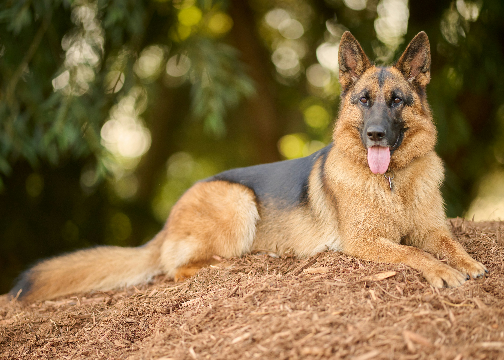
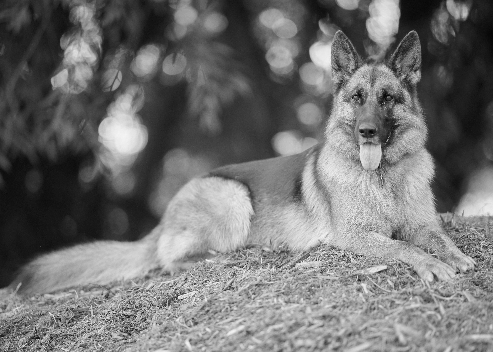
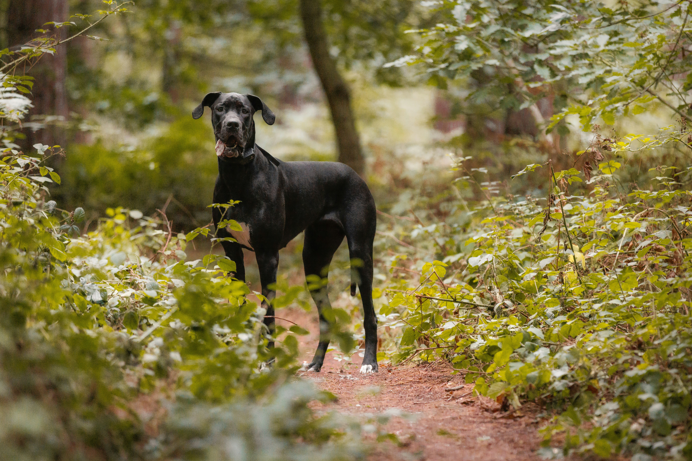
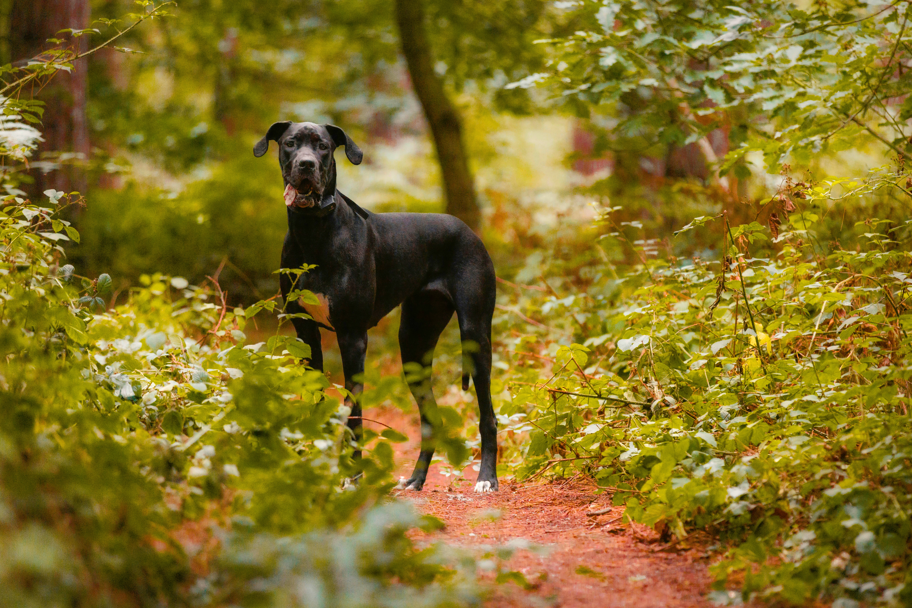
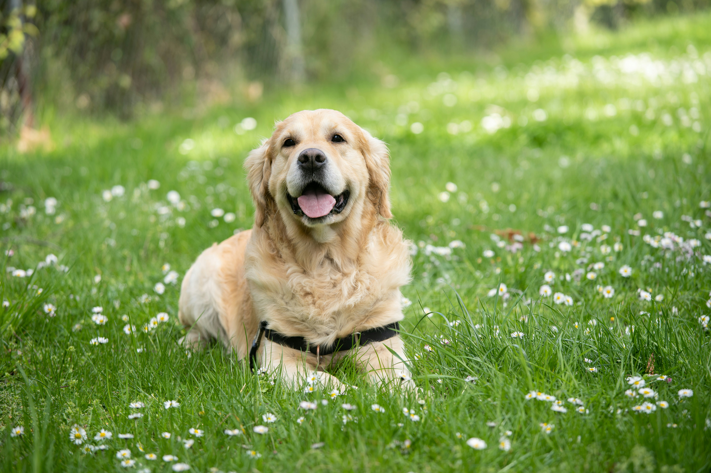
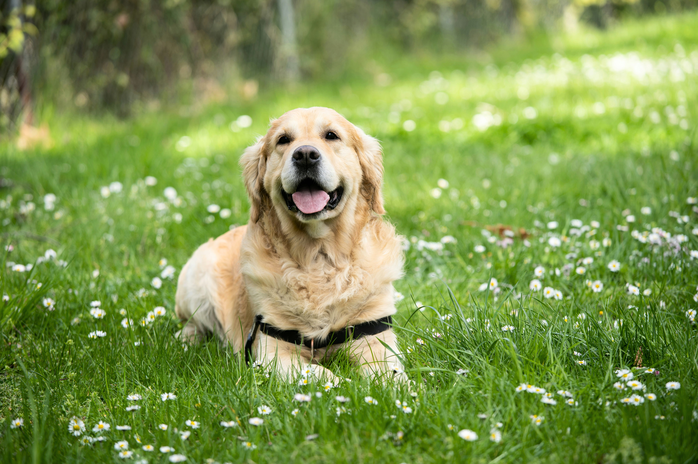
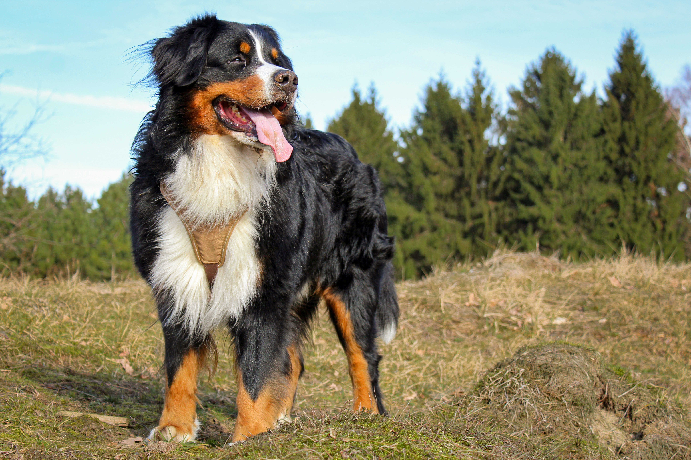
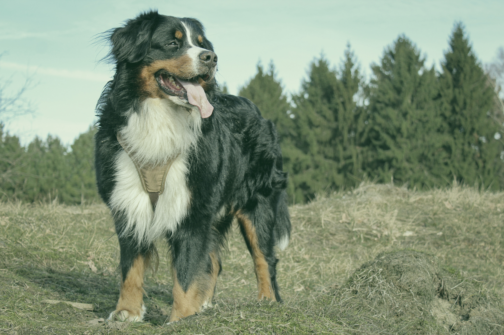

01. German Shepherd — Black & White
This German Shepherd photograph was converted to black and white by removing its color in Canva. The edit emphasizes the dog's fur, expression, and shape.
Original Image

Edited Image

WEB140 • Image Editing & Icons
Explore four large dog breeds through photography, image editing, and Font Awesome icons. Each image demonstrates a different editing technique completed in Canva.
Meet the DogsFour Big Dogs
Each dog photograph demonstrates a different image-editing technique completed in Canva. The original and edited versions are shown together for comparison.
This German Shepherd photograph was converted to black and white by removing its color in Canva. The edit emphasizes the dog's fur, expression, and shape.


The Great Dane photograph was edited by increasing the color saturation in Canva. The stronger colors help emphasize the outdoor setting and the dog's playful expression.


The Golden Retriever photograph was edited by adjusting the contrast between the lighter and darker areas of the image. This creates a stronger difference between the dog and the grass.


The Mountain Dog photograph was transformed into a green monochromatic image. Different shades of green create a single-color effect while keeping the dog and forest details visible.


Font Awesome
These icons were selected from Font Awesome and customized using CSS.
Add information about photography related to your theme.
Add information about what inspires your selected theme.
Explain how editing tools help you express creativity.
Customize these buttons and their icons to match your webpage.
Get in Touch
Replace this text with your own contact or informational content.